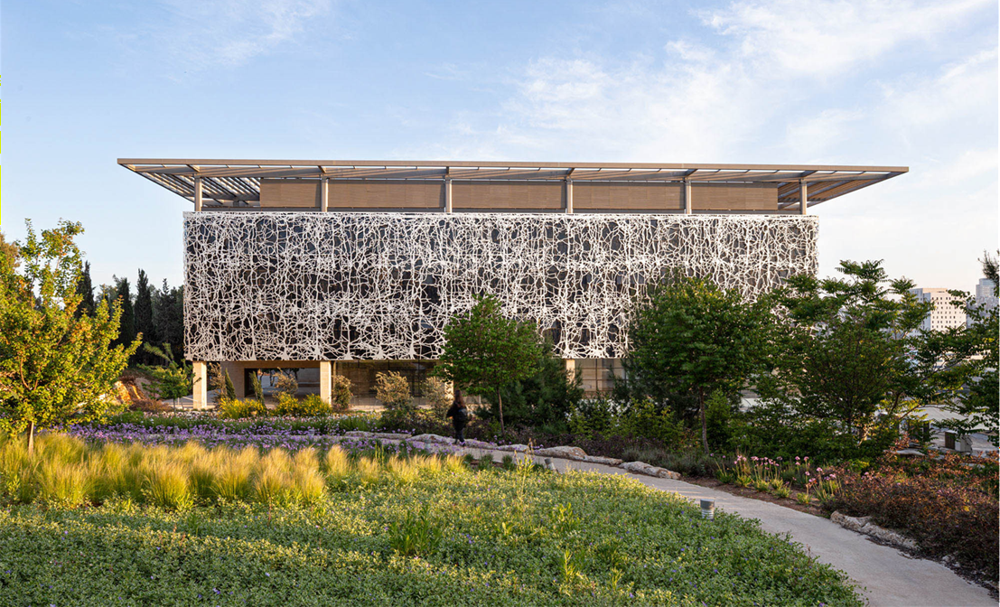

About
Our lab studies how neural circuits develop and give rise to behavior. We combine computational and experimental approaches to understand how the brain encodes and processes sensory information, and how these neural codes change during development.
Using the zebrafish as a model system, we investigate the principles governing spontaneous and evoked neural activity patterns in the developing brain. Our work bridges neuroscience, computational modeling, and behavioral analysis to uncover the rules that shape functional neural circuits.
The lab is part of the Edmond and Lily Safra Center for Brain Sciences (ELSC) at the Hebrew University of Jerusalem.
